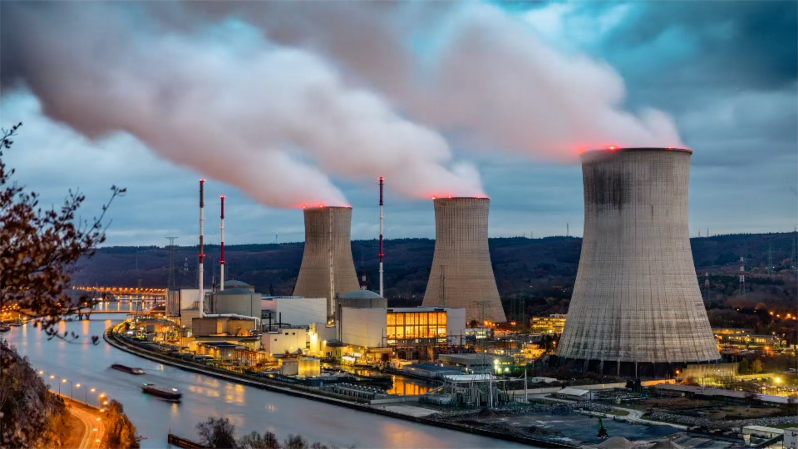
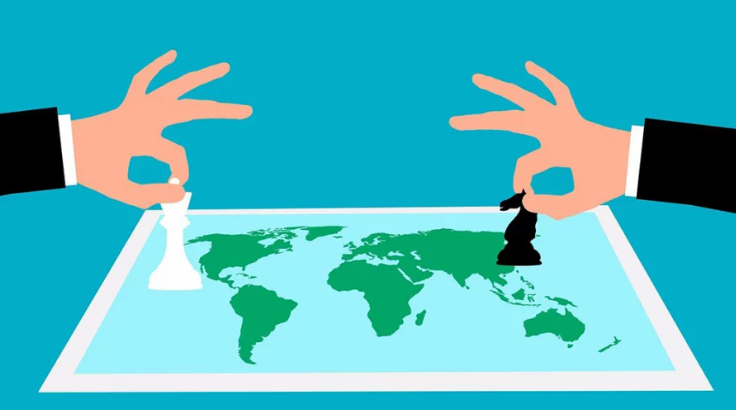

Pillars of "Bangladesh 2.0"
Innovation
Bangladesh is fostering innovation through startups, ICT growth, and digital services. With initiatives like Digital Bangladesh, the country is creating opportunities for young entrepreneurs and expanding its presence in the global tech industry.
Sustainability
The nation is prioritizing sustainable development by investing in renewable energy, climate resilience, and eco-friendly policies. Bangladesh is also recognized globally for its efforts in climate adaptation and disaster management.
Infrastructure
Massive infrastructure projects such as bridges, expressways, and metro rail systems are transforming connectivity. These developments are boosting trade, reducing travel time, and supporting long-term economic growth.
Empowerment
Empowering citizens through education, skill development, and gender equality is a key focus. Programs supporting women entrepreneurs and youth employment are helping build a more inclusive and balanced society.
The Vision of Future
Bangladesh 2.0 aims to redefine the nation’s trajectory by embracing cutting-edge technology, promoting inclusive growth, and ensuring sustainability. With initiatives in renewable energy, digital transformation, and robust infrastructure, the country is set to become a global model of development.
Bangladesh has made significant progress in economic growth, poverty reduction, and human development over the past decades. The country continues to strengthen its position through investments in education, digital innovation, and sustainable infrastructure. With a young and dynamic population, Bangladesh is embracing technology and entrepreneurship to build a resilient and inclusive economy. Continued focus on good governance, environmental sustainability, and social equity will further accelerate national development. If this momentum is maintained, Bangladesh is well on track to achieve its long-term vision of becoming a developed and prosperous nation in the coming years.
Dr. Muhammad Yunus
Chief Adviser of the People's Republic of Bangladesh
Recent News
Bangladesh 2.0 aims to redefine the nation’s trajectory by embracing cutting-edge technology, promoting inclusive growth, and ensuring sustainability. With initiatives in renewable energy, digital transformation, and robust infrastructure, the country is set to become a global model of development.
Back to Business

Date:23/03/2026 Time:10:28
After a seven-day holiday for Eid-ul-Fitr, government offices, banks, and insurance companies officially reopened today. Workers have been streaming back into Dhaka since yesterday, and office hours have returned to the standard 9:00 AM to 5:00 PM schedule.
Energy Update
Date:23/03/2026 Time:10:28
Despite the end of the holiday, fuel crisis continues to impact the country. Many petrol pumps are reporting shortages, and owners have warned of potential nationwide shutdowns if supply and security risks aren't addressed.


Diplomatic Moves
Date:23/03/2026 Time:10:28
State Minister for Foreign Affairs, Shama Obaed Islam, has formally requested for Russia’s support Bangladesh’s bid for the Presidency of the 81st Session of the UN General Assembly (2026–2027).
Donate Today
Bangladesh 2.0 aims to redefine the nation’s trajectory by embracing cutting-edge technology, promoting inclusive growth, and ensuring sustainability. With initiatives in renewable energy, digital transformation, and robust infrastructure.